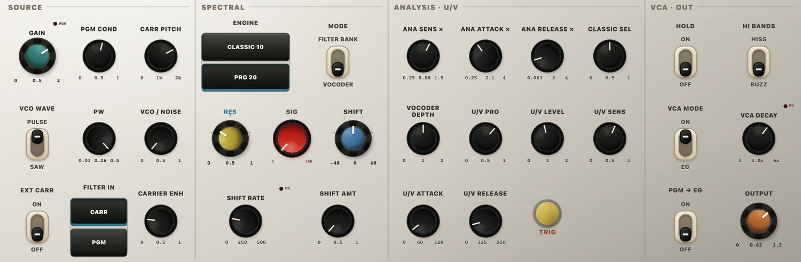
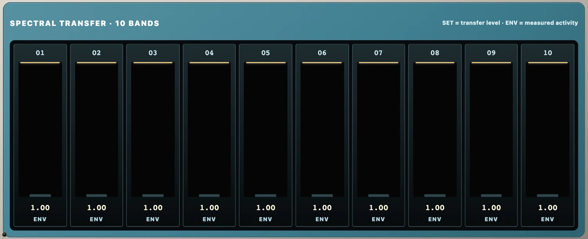

Spectral processor · Manual
SPETTRA 10
Reshape a signal band by band, vocode speech or move a spectrum with SHIFT and HOLD.

Hear your first sound
Start with the internal carrier, then bring in a program signal when you want to try the vocoder.


- Load First Sound
Open the preset display and choose First Sound. You can start with the internal source without a microphone.
- Tap TRIG
Open SPEC. Drag across a few bands to change their transfer levels.
- Move the response
Return to MAIN and adjust SHIFT. Try a little RES to hear the shape of the filter bank.
Route signals and vocode
Choose PROGRAM and CARRIER, then adjust how the analysis follows speech and transients.
Inputs & vocoder
Signal paths, carrier, analysis and speech detail.
- PROGRAM and CARRIER
PROGRAM carries the voice or rhythm to analyze. CARRIER supplies the sound to reshape. VOCODER needs both; FILTER BANK can process the carrier alone. Choose the path before adjusting gain.
- Build the carrier
CARR PITCH sets the internal oscillator. VCO WAVE and PW shape its harmonics; VCO / NOISE blends a pitched carrier with noise. EXT CARR selects external audio instead, supplied through the host sidechain.
- Prepare the voice
PGM COND controls input conditioning. In EXT → AUDIO, CONDITION GATE manages low-level noise, SPEECH AIR emphasizes speech detail and LEVELER evens the signal. Start gently and compare consonants and pauses.
- Follow articulation
ANA SENS changes analysis sensitivity. ANA ATTACK sets how quickly bands respond; ANA RELEASE sets how long they fall away. Short times articulate syllables; longer release joins them into a smoother texture.
- Unvoiced detail
U/V PRO restores unvoiced details such as breath and consonants. U/V SENS changes detection; U/V LEVEL sets their amount. U/V ATTACK and RELEASE shape the transition. EXT → SPECTRAL selects the U/V source.
- Choose the analysis engine
CLASSIC 10 and PRO 20 use different vocoder analyses. Compare the same voice and carrier before changing other controls. VOCODER DEPTH changes spectral expression; the analysis range and selectivity are available in EXT → SPECTRAL.
Shape and animate the bands
Edit the transfer profile in SPEC. Use SHIFT, resonance and HOLD to hear different kinds of motion.


Bands & motion
Transfer levels, SHIFT, resonance, HOLD and VCA.
- Transfer is not a meter
In SPEC, the gold line sets each band’s transfer level. The filled bar shows input activity before that level and the output VCA. A moving bar can therefore coexist with a muted band. Drag across columns to draw a spectral contour.
- Shift the spectral response
SHIFT moves the spectral response in semitones. It is different from CARR PITCH, which changes the internal oscillator. Hold one still while moving the other to hear the difference between carrier pitch and spectral position.
- Focus the resonances
RES emphasizes the resonant character of the bank. Start low and raise it slowly with several bands active. Lower OUTPUT if the result becomes too strong; compare the spectral contour before adding more motion.
- Animate SHIFT
SHIFT RATE sets LFO speed; SHIFT AMT sets its depth. SYNC chooses the clock source and DIV the host subdivision. A small amount gives gentle motion; larger depth sweeps a wider spectral region.
- Freeze the articulation
HOLD retains the vocoder’s spectral envelopes. The live input meters still follow incoming audio; they do not become the frozen sound. Compare HOLD on and off with speech to hear which articulation is being retained.
- Shape the output envelope
VCA MODE selects continuous ON or envelope-controlled EG. In EG, TRIG starts a note and VCA DECAY sets its fall. PGM → EG allows program-derived triggering. Check this stage when the input meters move but output remains silent.
Set up EXT and SIG
Tune the analysis ranges and effects, map MIDI and build a multi-parameter SIG gesture.
EXT & SIG
Advanced ranges, effects, MIDI and macro mapping.
- Inside EXT
EXT groups MIDI, EFFECTS, AUDIO, SPECTRAL, PERF, SIG and SIG PRESSURE. Choose one tab at a time. These controls act on the same sound as the main panel; EXT is not a second instrument.
- Set the analysis window
In EXT → SPECTRAL, CLASSIC RANGE LOW / HIGH and PRO 20 RANGE LOW / HIGH set each engine’s analysis span. PRO 20 SELECTIVITY focuses separation. Change one boundary at a time and compare the same input.
- Shape the effect returns
DELAY and REVERB in the header control wet amount. EXT → EFFECTS exposes time, feedback, size, decay and modulation. Begin with a low wet level, then adjust the effect itself while keeping the original articulation audible.
- MIDI control and feedback
EXT → MIDI shows the active control mapping. SPETTRA uses fixed MIDI CC control and feedback; CC 14 at 64 or above triggers a hit. This audio effect does not use per-note MPE configuration.
- One gesture, several parameters
SIG is the red signature macro. In EXT → SIG, choose an assigned target or use ADD CONTROL to add one. The macro moves its assigned parameters together; inspect the target list before turning it.
- Design the SIG gesture
LOW and HIGH define each target’s endpoints. LINEAR and, where available, LOG change its response. Save a signature copy before experimenting. SIG PRESSURE provides pressure-related shaping, including rise and fall times.
Generate and save sounds
Generate within chosen ranges and locks. Save a result to the User library when it works for your input.
GEN & memories
Profiles, ranges, locks, patches and USER library.
- Choose a generation profile
Hold GEN to open its panel. AUTO, WARM, FORMANT, MOTION and AIR guide the spectral character. VARIATION controls the degree of change. These are generator settings: selecting them does not itself generate a new sound.
- Constrain the result
MIN and MAX bound each generated parameter. Drag values vertically; equal bounds make a fixed value. SOUND, ENV and FX separate the ranges by role. Press GEN inside the panel to generate without closing it.
- Keep what already works
LOCKS protects parameter groups during GEN. A lock keeps their current live values, rather than choosing new values within the range. Use it to retain the carrier, band contour or articulation while exploring another part of the sound.
- Routing and generation
The PATCH lock retains existing cables. With it unlocked, GEN can explore modulation routes while preserving external input hookups. In the patchbay, connect an output to an input deliberately; the tutorial never patches or enables audio for you.
- Save a USER sound
Open Preset Monitor and save the result explicitly as USER. Generated and edited sounds remain unsaved until you do this. Give the sound a useful name; keep a separate copy before making a major variation.
- Library and optional sync
Standalone and AUv3 share the product’s USER library. Optional iCloud sync needs the native app and explicit activation. Local sounds remain usable offline. Enable sync only if you want these presets on your other devices.